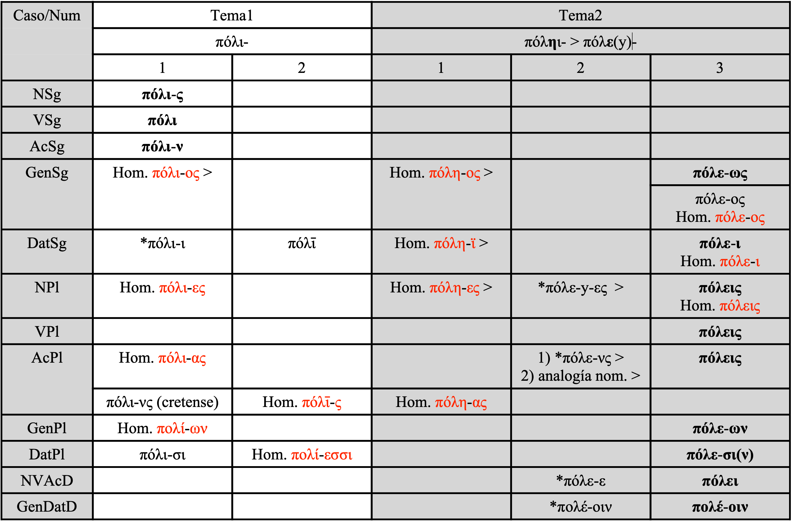

Notas¶
A¶
ᾱ (alfa larga)¶
La lengua homérica, bajo la forma en que nos ha llegado, es esencialmente jónica. De ahí que ᾱ exija una explicación:
- (a) en algunos verbos contractos en -άω los manuscritos dan unánimemente grafías en ᾱ: πεινάων ;
- (b) los nombres propios en -άων han conservado de una manera general su ᾱ:
- Ποσειδάων;
- (c) ἀήρ lleva en nominativo una α que se opone a la η de ἠέρι, ἠέρα, adjetivo ἠερίη. La forma es quizá un aticismo;
- (d) la ά de θεά se explica como un eolismo; en jónico es ή θεός;
- (e) los genitivos -άων y -άο de la primera declinación son formas arcaicas con distinto valor métrico que sus equivalentes jónicos modernos -έων, -εω y, por tanto, insustituibles.
ἐΰς/ἠΰς¶
Se observa en el adjetivo ἐΰς una alternancia con la forma ἠΰς, neutro ἠΰ/ἐΰ, según las necesidades métricas.
ρ (vocalismo de sonantes)¶
Tratamiento vocálico de las sonantes:
- (a) como resultado de r vocálica, los aedos han elegido la forma más favorable al hexámetro dactilico. Al ático καρδία responde el homérico κραδίη. Por la misma razón es utilizado καρτερή;
- (b) es característico del dialecto micénico y del eolio el timbre o en lugar de a en el tratamiento de las sonantes; la lengua homérica presenta ἤμβροτες (ἁμαρτάνω), βροτός de la misma raíz que lat. mortu-us;
- (c) la υ del numeral "cuatro" πίσυρες frente a la α del jónico (τέσσαρες) es también un rasgo eólico (para la consonante inicial cf. e 3).
αἴ(θε)¶
- El uso de αἰ, αἴθε por εἰ, εἴθε es también un eolismo.
ἀρι-/ἐρι-¶
- ἀρι-, prefijo con valor intensivo, aparece frecuentemente en Homero bajo la forma eólica ἐρι-.
μάν/μέν/μήν¶
- La partícula afirmativa μάν (ᾱ) (át. μέν, μήν) se encuentra en todos los dialectos menos en jónico-ático, y en Homero debe ser considerada como un elemento pre-jónico.
- La distribución en Homero de μάν y μέν responde a razones métricas y la grafía μήν parece deberse a influencia ática.
Alargamiento métrico¶
-
El alargamiento métrico es el alargamiento de una vocal para adaptar la palabra al metro dactilico, evitando la sucesión de breves:
-
(a) la α alargada lleva frecuentemente el timbre a: ἀ-θάνατος. El timbre η se da en palabras puramente épicas: ἠερέθονται, ἠγάθεος, ἠνορέη ;
- (b) el alargamiento para ε es generalmente ει: ἀπερείσια, εἰα-ρινός.
- La preposición ἐν cuando sigue una palabra cuyas dos primeras sílabas son breves: εἰν ἀγορῇ.
- Lo mismo ὑπεὶρ ἅλα.
- La preposición εἵνεκα junto a ἕνεκα se explica probablemente por un alargamiento métrico, pues en las tablillas micénicas la palabra no tiene digamma.
- (c) el alargamiento para o es ου: οὐλομένη, οὖλος.
Contracción¶
- La contracción de dos vocales en contacto aparece claramente en la lengua homérica. Estas raras apariciones demuestran, no obstante, que los aedos empleaban ya la contracción en su lengua:
- (a) el paso de εο a ευ es jónico: ἐμεῦ, ἔπλευ, ἕζευ;
- (b) cuando dos i se encuentran en contacto no aparece nunca la grafía doble, sino la forma contracta con ῑ: κόνῑ, κνήστῑ, dativos de temas en -i ;
- (c) la forma del numeral ὀγδώκοντα resulta de la contracción jónica de -οη-;
- (d) δῷσι, 3ª sing. subj. aoristo de δίδωμι parece ser una contracción de -ωῃ-;
- (e) ἠέλιος, forma sin contraer.
Sinizesis¶
- La necesidad métrica determina en muchos casos la sinizesis, es decir, dos vocales en contacto contando como una sola sílaba.
- Así Μηκιστέος.
- Una forma singular es ἀϊκώς = ἀεικώς, que parece llevar una sinizesis de ἀει-.
Abreviamento¶
- Algunas formas homéricas se explican por el abreviamiento de una vocal larga o por metátesis de cantidad, cuando la siguiente es breve. Estas formas generalmente son jónicas.
- Genitivo plural de los temas en ᾱ: ἐφετμέων, πασέων.
- Genitivo singular masculino de los temas en -ά: Πηληϊάδεω.
- El término χρεώ, "necesidad", propiamente épico junto a la grafía χρηώ.
Hiféresis¶
- Los grupos complejos del tipo -εεο-, -εεα-, tienden a perder una ε. Es el fenómeno de la hiféresis.
- Así δυσκλέα (pero tal vez es δυσκλεέ' ante vocal)
- y σπέος (por σπεε(σ)-ο*ς, genitivo singular del neutro σπέος.
Diéctasis¶
-
Puramente homérico es el fenómeno de la diéctasis, consistente en la conservación artificial del valor disilábico de dos vocales en contacto, pero dando a ambas el mismo timbre vocálico que resultaría de la contracción:
-
(a) el tipo más frecuente es el que presenta vocal breve más vocal larga:
- ἀντιόωσα,
- ὁρόων (-αω-).
- También κομόωντες,
- εἰσορόωντα;
- (b) el tipo opuesto (vocal larga más vocal breve) es el ofrecido por ἡβώοντες (-αο-);
- (c) otro ejemplo de diéctasis es φάανθεν, 3ª pl. del aoristo. Probablemente viene de una forma *φαενθεν ;
- (d) en el adjetivo *σάος aparece (comparativo σαώτερος) la forma con contracción σῶς (XXII 332) y la forma σόος con diéctasis. Otro ejemplo es φόως por φάος, cuando la última sílaba es larga por posición.
Crasis¶
- La crasis es poco frecuente en Homero. Un ejemplo seguro de crasis es la de οὕνεκα (οὗ ἕνεκα), τοὔνεκα (τοῦ ἕνεκα).
Apócope¶
- La apócope, caída de la vocal final de una palabra ante consonante, se observa en Homero en las preposiciones o preverbios ἀνά, κατά y παρά, que aparecen como ἄν, κατ, παρ con diversas asimilaciones:
- ἄμ-βατός,
- ἄν-σχεο,
- κάλ-λιπε,
- κάβ-βαλον.
Preverbios¶
- Εn el interior de palabras compuestas, especialmente de verbos, los preverbios pueden conservar su vocal final ante otra vocal: ἀποαιρεῖσθαι, ἀποειπεῖν, junto a ἀπειπόντος, κατείνυον.
Prótesis vocálica¶
- Palabras con prótesis vocálica, especialmente frecuente ante digamma:
- ἐείκοσι,
- ἐΐση,
- ἐέλδωρ de *wel- "esperar".
Vocalismo especial¶
- Algunos casos especiales de vocalismo.
- Presente τάμνειν (át. τέμνειν); para los temas en -r ver 17.
- Para ciertas formas de εíμι ver o5, y para ίδυΐῃ ver o4.
Vocalismo especial¶
- Otros casos de vocalismo especial:
- ἱρά, ἱρή frente a ἱερά del ático;
- ἕταρος frente a ἑταῖρος del ático y del propio Homero;
- Διώνυσος por Διόνυσος.
wau¶
Reflejos de wau¶
- La wau o digamma (F conservada en algunos dialectos y pronunciada como w en inglés) no es notada jamás en el texto tradicional, pero numerosos indicios prueban su existencia en posición inicial:
- (a) impide el hiato: τε (ϝ)ἄναξ, ἐνὶ (ϝ)οἴκῳ;
- (b) mantiene la cantidad de una vocal larga o diptongo: καὶ (ϝ)οἱ (I 79);
-
(c) después de una sílaba terminada por consonante hace posición: εἶπες (ϝ)ἔπος (I 108).
-
La probable explicación es que estos efectos de la digamma, que no existía ya en la época de los aedos jónicos, son una reliquia de la épica primitiva; en los siglos XV-XIII, en micénico, aparece todavía y son utilizados por los aedos según las necesidades del verso.
Notación de wau¶
- En posición interior, después de vocal, la digamma se encuentra a veces vocalizada y notada υ:
- (a) en algunas palabras aisladas delante de ρ: ἀπούρας;
- (b) en aoristos asigmáticos en -α, en posición intervocálica: χεύατο, ἠλεύατο;
- (c) en el numeral δυώδεκα frente al ático y homérico δώδεκα;
- (d) al ático δέομαι responde en Homero δεύομαι.
Alargamiento por caída de wau¶
- Después de las sonantes la digamma cae con alargamiento compensatorio de la vocal anterior. Éste es un rasgo jónico:
- (a) para -νF-: μοῦνος, γούνων, ξεῖνος;
- (b) para -ρF-: κούρη, οὐρῆας.
-δϝ-¶
- En el grupo -δϝ- hay caídade digamma:
- (a) con alargamiento δειδιότα, θεουδής;
- (b) con geminada ὑποδδείσας.
-σϝ-¶
- El grupo -σϝ- con caída de F y alargamiento de la vocal anterior, al menos en algunas palabras: ἶσος, νοῦσος.
Yod¶
-
La yod es una semiconsonante próxima a la vocal i; existe en español fiera y en ciertas pronunciaciones de hierro. Ha desaparecido entre vocales, pero si previamente se ha geminado, subsiste como vocal i. Así tenemos dobletes con i y sin ella (según necesidades métricas):
-
(a1) gen. sing. ἐμεῦ, ἐμεῖο ; σεο, σεῦ, σεῖο;
- (a2) denominativos en -έω, -είω: τελέεσθαι, ἐτελείετο;
- (a3) adjetivos κεραός, χρύσεος, χάλκεος, χρύσειος, χάλκειος;
- (b) de κεῖμαι se tiene κέαται, κέατο ;
- (c) diferente es el caso de la palabra ὁμοίϊος distinta de ὁμοῖος.
Yod secundaria: διV > ζV¶
- La i vocal puede pasar secundariamente a yod: ζά-θεος (διά-θεος) eolismo.
- Inversamente ζ- equivale a veces a una δ: ἀριζήλη (δήλος).
-υι-¶
- θυίω para el ático θύω "lanzarse" es quizá un eolismo. El grupo -υι- forma un diptongo.
SONANTES CON SIGMA: ρ/λ + σ¶
Sonante más sigma mantenida¶
- En los aoristos sigmáticos de verbos en ρ y λ el ático tiene caída de sigma con alargamiento compensatorio de la vocal. Es también el tratamiento normal en Homero. Sin embargo, el grupo -ρσ- mantiene intacto en los aoristos propios de la lengua épica y desconocidos del ático: κύρσας (κύρω), ὦρσε (δρνυμι), ἔλσαι (εἴλω), ἄρσαντες, (ἀείρω).
ἐννέπω¶
- Pero tal grupo no existe en ἐννέπω, cuya geminada es puramente rítmica frente a ἐνέπω.
ἔσπετε ἐννέπω¶
- El aoristo ἔσπετε < *ἐν-σπετε (ἐννέπω): el grupo -νσπ- se reduce a -σπ- sin alargamiento de la vocal.
-sn-/-sm-¶
- El resultado de los grupos -sn-, -sm- es en eolio -vv-, -μμ-, pero reducción y alargamiento compensatorio en los demás dialectos.
- La lengua homérica presenta uno u otro tratamiento y en el primer caso consonante geminada o sencilla según las necesidades del verso:
- ἐρεβεννός (ἐρεβος).
- Infinitivos de εἰμι: ἔμεν, ἔμεναι.
- Pronombres personales: ἄμμε (át. ἡμᾶς), ὔμμες (át. ἡμεῖς).
- En composición ἀγά-ννιψος.
Sigma más aumento/composición¶
- En composición o con el aumento la sigma cae y la sonante puede ser geminada: ἐϋμμελίω, ἄμμορον con ἀ- privativa. Lo mismo en el imperfecto de νέω ἔννεον y en ἔλλαβε, aoristo de λαμβάνω.
σ/σσ (alternancia)¶
- En la lengua homérica se observa una alternancia σ/σσ, especialmente en las siguiente formas:
- (a) dativos en σι (pero el dativo "eolio" en εσσι rara vez aparece con σ);
- (b) futuros y aoristos sigmáticos: καλέσσατο, ἔσσεται;
- (c) adjetivos y adverbios como τόσσος, ὅσσος, ὀπίσσω, μέσσος;
- (d) en nombres propios como Ὀδυσσεύς;
-
(e) en la composición o después del aumento: ἐϋσσέλμοιο, περισσείοντο.
-
En las palabras del grupo (a) y del (c) la sigma sencilla procede de un grupo σσ, lo que explica en parte la alternancia.
- En los demás grupos la sigma procede de -σσ- en algunas palabras, pero en las restantes ha actuado la analogía, ya que los dobletes resultaban métricamente cómodos.
- En todas estas palabras el jónicoático tiene formas con sigma sencilla.
-σσ- (constante)¶
- La doble sigma es constante:
- (a) en los presentes en σσω (ático ττω): ὄσσομαι, ἀνάσσεις;
- (b) en los comparativos en -σσων (ático -ττων): κρείσσων;
- (c) en el femenino de los adjetivos en είς: τειχιόεσσα;
- (d) en el numeral τέσσαρες.
-ππ-/-ττ-¶
La alternancia se da también en algunos casos en que una oclusiva geminada se ha simplificado: ὁππότε, ὅππως, ὅττι.
-λλ-/-λ-¶
El doblete Ἀχιλεύς, Ἀχιλλεύς ha sido creado arbitrariamente.
π-/πτ-¶
Junto a πόλις y πόλεμος encontramos en nuestra antología πτολίεθρον, πτολεμιστής, πτόλεμος. Las formas con πτ- están atestiguadas en micénico, chipriota y probablemente pertenecen al fondo aqueo de la epopeya.
γί(γ)νομαι¶
Junto a la forma del ático γίγνομαι encontramos en los manuscritos γίνομαι. En nuestra edición usamos la grafía γίγνομαι.
-μρ-/-μβρ-/βρ-¶
En el antiguo grupo mr se desarrolla una β entre la μ y la p: ἤμβροτες (ἥμαρτες), βροτός (lat mortuus) con pérdida de la μ inicial.
Labiovelar sorda + i > τ, σ¶
En griego generalmente la labiovelar primitiva sorda se resuelve en τ ante vocal i. El numeral πίσυρες, que es eólico, es una excepción debida quizá a la influencia de πέσυρες.
Labiovelar sorda + e > τ, π¶
Ante e la labiovelar sorda pasa a τ en el conjunto de los dialectos griegos, pero a π en eolio: πέλεται, πελώριον son en Homero eolismos.
Asimilación de oclusivas¶
Dos oclusivas en contacto se asimilan. Típico es el caso de las preposiciones ἀνά y κατά en apócope (cf. b14).
-λν-¶
El grupo -λν- pasa a -λλ- en eolio y a -λ- con alargamiento compensatorio en los demás dialectos: ὄψελλεν, imperfecto de ὀψείλω.
PRIMERA DECLINACIÓN¶
| Ático | Ático | Homero 1 | Homero 2 | |||
|---|---|---|---|---|---|---|
| sing. | nom. | χώρ-ᾱ | γνώμ-η | -η | -η | |
| gen. | χώρ-ᾱς | γνώμ-ης | -ης | -ης | ||
| dat. | χώρ-ᾳ | γνώμ-ῃ | -ῃ | -ῃ | ||
| acc. | χώρ-ᾱν | γνώμ-ην | -ην | -ην | ||
| voc. | χώρ-ᾱ | γνώμ-η | -η | -η | ||
| dual | n.a.v. | χώρ-ᾱ | γνώμ-ᾱ | -ᾱ | -ᾱ | |
| g.d. | χώρ-αιν | γνώμ-αιν | -αιν | -αιν | ||
| pl. | n.v. | χῶρ-αι | γνῶμ-αι | -αι | -αι | |
| gen. | χωρ-ῶν | γνωμ-ῶν | -άων (-ᾱων) κλισιάων | -έων ἐφετμέων | ||
| dat. | χώρ-αις | γνώμαις | -ῃσι (< -ησι, -οισι) | -ῃς (jonio) | ||
| acc. | χώρ-ᾱς | γνώμ-ᾱς | -ᾱς | -ᾱς |
| Ático | Ático | Homero 1 | Homero 2 | ||
|---|---|---|---|---|---|
| sing. | nom. | νεανί-ᾱς | στρατιώτ-ης | στρατιώτ-ης, νεανί-ης | μητίετ-ᾰ, ἱππότᾰ |
| gen. | νεανίου | στρατιώτου | ἑκατηβελέτ-ᾱο, Ἀτρεΐδ-ᾱο | Ἀτρεΐδ-εω | |
| dat. | νεανίᾳ | στρατιώτῃ | |||
| acc. | νεανίᾱν | στρατιώτην | |||
| voc. | νεανί-ᾱ | στρατιῶτ-ᾰ | Ἀτρεΐδ-η, Πηλεΐδ-η κυνῶπ-ᾰ | ||
| dual | n.a.v. | νεανίᾱ | στρατιώτᾱ | Ἀτρεΐδ-ᾱ | |
| g.d. | νεανίαιν | στρατιώταιν | |||
| pl. | n.v. | νεανίαι | στρατιῶται | ||
| gen. | νεανιῶν | στρατιωτῶν | -άων (-ᾱων) ναυτ-άων | -έων: ναυτ-έων | |
| dat. | νεανίαις | στρατιώταις | -ῃσι (< -οις) | -ῃς (jonio) | |
| acc. | νεανίᾱς | στρατιώτᾱς |
θεά¶
Para el nominativo θεά.
Nominativo masculino ᾰ¶
Algunos masculinos tienen un nominativo en ᾰ: μητίετᾰ, ἱππότᾰ.
Vocativo masculino η¶
El vocativo en los masculinos unas veces es en η: Ἀτρεΐδη, Πηλεΐδη, y Otras en ᾰ: κυνῶπᾰ, siendo este último el más frecuente.
Genitivo -ᾱο¶
El genitivo masculino singular en -ᾱο es creado según la analogía del de los masculinos de la segunda (cuando era en -oo): ἑκατηβελέτᾱο, Ἀτρεΐδᾱο.
Genitivo -εω¶
Para el genitivo masculino singular en -εω con sinizesis, cf. b10.
Genitivo plural -άων/-έων¶
La forma del genitivo plural es -άων (-ᾱων) y -έων (cf. b10): τάων, κλισιάων, ἐφετμέων.
Dativo plural -ῃς¶
En dativo plural la desinencia jónica -ῃς (-αις) ha sido creada sobre el modelo de -οις de la segunda declinación. La larga η se explica por la analogía de ησι, que será estudiada a continuación.
Dativo plural -ησι¶
Mucho más frecuente es el dativo plural en ησι, desinencia creada sobre ησι (originariamente de locativo) más una iota analógica de οισι.
Dual¶
Los únicos ejemplos de duales de la primera en Homero son masculinos como Ἀτρεΐδᾱ.
SEGUNDA DECLINACIÓN¶
Genitivo singular -οιο¶
Los genitivos en -οιο proceden de *-οσyο (cf. para el tratamiento del grupo -sy- c6a): Πριάμοιο, θεοῖο.
Dativo plural -οισι¶
En el dativo plural la desinencia más frecuente es -οισι (antiguo locativo). La otra desinencia -οις ante vocal puede recubrir un -οισι elidido. Los únicos casos seguros son ante consonante y en fin de verso.
νηός/νεώς¶
Frente al ático νεώς la lengua homérica presenta νηός, sin metátesis de cantidad y, por tanto, con la declinación normal.
γάλως/γαλόων¶
En vez del ático γάλως encontramos en Homero gen. plural γαλόων.
Dual -ω/-οιιν¶
Para el dual el nominativo y acusativo en -ω es conocido; para el genitivo y dativo la forma constante en Homero es en -οιιν (át. -οιν).
TERCERA DECLINACIÓN¶
Dativo plural en -εσσι¶
Dativo plural en -εσσι. La desinencia ha sido creada según la proporción λύκοι : λύκοι-σι :: πόδες : πόδεσ-σι.
γερᾰ¶
γερᾰ (IX 334) es el nom. ac. pl. de γέρας, tema en sigma. Esta α breve anómala representa quizá una antigua forma de neutro en -a sin sigma.
ἠώς¶
Ἠώς es un tema femenino en -ως. En el ático ha habido abreviamiento ante vocal y el origen del espíritu áspero no es seguro. El dat. sing. es ήοι con contracción.
αἰέν¶
El adverbio αἰέν "siempre" es un locativo sin desinencia de un tema en -v (mientras que αἰεί es locativo con desinencia -i de un tema en -ς).
κυκειῶ/κυκεῶ¶
Alternancia de un tipo semejante a la anterior se da en el acusativo κυκειῶ (XI 624) o κυκεῶ, que corresponde a un nominativo κυκεών, no homérico. El acusativo procede de una forma *-εοσα.
Neutros en -r-/-t-¶
Algunos temas en -r, neutros, han formado su flexión con ayuda de otro tema en t: así ἦμαρ, ἤματος. Las formas adverbiales ἐννήμαρ, αὐτῆμαρ no tienen flexión. La palabra es homérica y su correspondiente jónico es ἡμέρη.
Nombres de parentesco en -ρ¶
Los temas en -ρ, nombres de parentesco, tienen con frecuencia un grado vocálico distinto del del ático ἀνέρες, μητέρι.
Temas en i¶
En los temas en -i Homero ofrece un solo tipo con elemento predesinencial en grado cero y unido directamente a las desinencias: ὕβριος, πολίων. El ac. πόλεις (IX 328) debe ser un aticismo de la tradición manuscrita. Para el dat. de sing. en -ῑ cf. b8.

Sustantivos en -ευς¶
- La flexión de los sustantivos en -εύς no llevaba originariamente alternancia.
- El sufijo -ηϝ- aparece sin abreviar: gen. Ἀχιλήος, dat. βασιλῆϊ, etc.
- Algunos nombres propios tienen una ε: gen. Ἀτρέος, Τυδέος. Estas formas ofrecían un ritmo | ˉ ˘ ˘ | cómodo para los aedos.
- Por comodidad métrica surgen formas artificiales como Αἰθιοπῆας, que pertenece a un tema consonantico.
| Número | Caso | Ático | Homero 2 | Homero 1 | Gr. común |
|---|---|---|---|---|---|
| sing. | nom. | ἱππεύ-ς | |||
| gen. | ἱππέ-ως | Ἀτρέ-ος | βασιλῆ-ος | βασιλῆ(ϝ)-ος | |
| dat. | ἱππε-ῖ | βασιλῆ-ϊ/-ῆ-ι | βασιλῆ(ϝ)-ι | ||
| acc. | ἱππέ-ᾱ | βασιλῆ-ᾰ | βασιλῆ(ϝ)-ᾰ | ||
| voc. | ἱππεῦ | ||||
| dual | n.a.v. | ἱππῆ | |||
| g.d. | ἱππέ-οιν | βασιλῆ-ες | βασιλῆ(ϝ)-ες | ||
| pl. | n.v. | ἱππῆς or ἱππεῖς | |||
| gen. | ἱππέ-ων | βασιλή-ων | βασιλή(ϝ)-ων | ||
| dat. | ἱππεῦ-σι(ν) | ||||
| acc. | ἱππέ-ᾱς | βασιλῆ-ᾰς | βασιλῆ(ϝ)-ᾰς |
ναῦς¶
El nombre de la "nave" (át. ναυς) tiene en Homero η: νηΐ, νῆα, etc. A estas formas se opone otra serie con ε: νέες, νεῶν.
| Número | Caso | Ático | Homero 1 | Homero 2 | Homero 3 |
|---|---|---|---|---|---|
| sing. | nom. | ναῦς | νηῦς | ||
| gen. | νεώς | νηός | νεός | ||
| dat. | νηΐ | νηΐ | |||
| acc. | ναῦν | νῆα | νέα | ||
| voc. | ναῦ | ||||
| dual | n.a.v. | νῆε | |||
| g.d. | νεοῖν | ||||
| pl. | n.v. | νῆες | νῆες | νέες | |
| gen. | νεῶν | νηῶν | νεῶν | ||
| dat. | ναυσί(ν) | νηυσί(ν)/νήεσσι(ν) | νέεσσι(ν) | ναῦφι(ν) | |
| acc. | ναῦς | νῆας | νέας |
βοῦς¶
Para βοῦς la forma frecuente de acusativo plural es βόας, pero también βοῦς (I 154) está atestiguado. Para el dativo βόεσσι cf. i1.
| Número | Caso | Etimología | Ático | Homero 1 | Homero 2 |
|---|---|---|---|---|---|
| sing. | nom. | βου-ς | βοῦς | βοϝες > βόες | |
| gen. | βου-ος | βοϝος > βοός | |||
| dat. | βου-ι | βοϝί > βοΐ | |||
| acc. | βου-ν | βοῦν | βῶν | βοῦν | |
| voc. | βου- | βοῦ | |||
| dual | n.a.v. | βου-ε | βόϝε > βόε | βόε | |
| g.d. | βου-οιν | βοϝοῖν > βοοῖν | |||
| pl. | n.v. | βου-ες | βοϝες > βόες | ||
| gen. | βου-ων | βόϝων > βοῶν | |||
| dat. | βου-σι(ν) | βουσί(ν) | βό-εσ-σι(ν) (eolio) | βουσί(ν) | |
| acc. | βου-νς | βοῦς | βόϝας > βόας | βοῦς |
Ζεύς¶
Para Ζεύς, junto a las formas conocidas en ático, se utiliza en Homero una flexión formada sobre el acusativo Ζῆνα, gen. Ζηνός, dat Ζηνί.
| Número | Caso | Ático | Homero 1 | Homero 2 |
|---|---|---|---|---|
| sing. | nom. | Ζεύς | Ζεύς | |
| gen. | Διός | Ζηνός | Διός | |
| dat. | Διί | Ζηνὶ | Διί, Διῒ | |
| acc. | Δία | Ζῆν, Ζῆνα | Δία | |
| voc. | Ζεῦ | Ζεῦ |
Ἄρης¶
Ἄρης sigue una flexión particular. Unas formas tienen η como si se tratara de un nombre en εύς: Ἄρηι; otras ε: Ἄρεϊ, que podría explicarse como de un tema en -s, lo cual va bien con el nominativo Ἄρης y con el vocativo Ἄρες.
| Número | Caso | Ático | Homero 1 | Homero 2 (= ático) | Eolio |
|---|---|---|---|---|---|
| sing. | nom. | Ἄρης | (≈ Ἄρευς) | Ἄρης | Ἄρευς |
| gen. | Ἄρεος | Ἄρηος | Ἄρεος | Ἄρευος | |
| dat. | Ἄρει | Ἄρῃ, Ἄρηι, Ἄρηϊ, Ἄρηΐ | Ἄρει, Ἄρεϊ | Ἄρευα | |
| acc. | Ἄρεα | Ἄρηʼ, Ἄρηα | Ἄρευι | ||
| voc. | Ἄρες | Ἄρες, Ἆρες | Ἄρευ |
κῆρ¶
El nombre raíz κῆρ "corazón" tiene una forma de nominativo arcaico con pérdida de la δ final (cf. lat. cor, cordis). De este nominativo se ha sacado una flexión. Así dat. κῆρι.
| Número | Caso | Hom | Latín |
|---|---|---|---|
| sing. | nom. | κῆρ (< κέαρδ) | cor(d) |
| gen. | - | cordis | |
| dat. | κῆρι | cordi | |
| acc. | κῆρ (< κέαρδ) | cor(d) | |
| voc. | - | cor(d) |
δῶ¶
δῶ "casa" debe ser un antiguo nombre raíz, pero se emplea casi sólo en giros adverbiales.
κάρη¶
La flexión del neutro κάρη "cabeza", jónico y homérico, presenta dos temas distintos. Sobre un nominativo κάρ se ha creado, con alargamientos, una flexión en dental: κρατός, κρατί. Del nom.-acus. κάρη se ha creado secundariamente una flexión καρήατος, καρήατι, καρήατα.
| Número | Caso | Homero 1 | Homero 2 |
|---|---|---|---|
| sing. | nom. | κάρη | (κάρ) |
| gen. | καρή-α-τος, κάρη-τος | ||
| dat. | καρή-α-τι | ||
| acc. | κάρη | (κάρ) | |
| voc. | κάρη | (κάρ) | |
| pl. | nom. | καρή-α-τα | |
| gen. | κρά-τ-ων | ||
| dat. | |||
| acc. | καρήατα | ||
| voc. | καρήατα |
Ἀΐδης¶
Ἀΐδης tiene una flexión heteróclita, mezcla de la atemática y de los masculinos de la primera. Del tipo atemático subsiste el dat. Ἄιδι (i 3) y el gen. Ἄϊδος, que encontramos unido a -δε, cf. j7. De los masculinos de la primera tenemos: gen. Ἀΐδαο.
| Número | Caso | Ático | Homero 1 | Homero 2 |
|---|---|---|---|---|
| sing. | nom. | Ἅιδ-ης, ᾍδ-ης | Ἀΐδ-ης | |
| gen. | Ἁΐδ-ου, ᾍδ-ου | Ἄϊδ-ος | Ἀΐδ-ᾱο, Ἀΐδ-εω | |
| dat. | Ἁΐδ-ῃ, ᾍδ-ῃ | Ἄιδ-ι | Ἀΐδ-ῃ | |
| acc. | Ἁΐδ-ην, ᾍδ-ην | Ἀΐδ-ην | ||
| voc. | ᾍδη |
Dual¶
El dual de la tercera declinación no ofrece dificultades y tenemos generalmente las formas conocidas del ático; ὄσσε es un dual arcaico y ha desaparecido en ático.
FORMAS ADVERBIALES¶
-φι¶
- El sufijo -φι usado como desinencia es exclusivo del micènico y de Homero (con rastros en beocio). Aparece sobre todo con instrumentales, pero después ha podido equivaler a cualquier caso de la flexión menos el acusativo, incluido el locativo. Es indiferentemente singular o plural:
- ὄχεσφι,
- βίηφι-ν,
-
φαινομένηφι-ν
-
-Ἶφι "por la fuerza" procede de un nombre raíz *ϝις, lat. uῑs, pero es sentido ya como un adverbio.
-θεν¶
- -θεν participa también del sistema nominal y del adverbial. Expresa el origen.
-
Se une
-
a adverbios: ἕκα-θεν,
- a temas de pronombres: ἑτέρω-θεν;
- proporciona frecuentes derivados de nombres οὐρανό-θεν, κλισίη-θεν.
-θεν¶
- El sufijo -θεν ha proporcionado en singular una forma de genitivo a los pronombres personales:
- ἐμέ-θεν,
- σέ-θεν,
- ἕ-θεν.
-θε(ν)¶
- Diferente de -θεν es el sufijo -θε, que puede llevar una -v efelcística para evitar el hiato. Indica el lugar "en donde", no la procedencia:
- σχεδό-θεν,
- ὄπι-θεν,
- ἐγγύ-θεν.
- Una variante con otro vocalismo aparece en ὕπαι-θα.
-θι¶
- El sufijo adverbial de lugar -θι no se encuentra en prosa ática. Es puramente homérico:
- ἔνδό-θι,
- ἐγγύ-θι,
-
τηλό-θι.
-
Sobre temas pronominales: ὅ-θι; αὖ-θι es locativo y no se puede confundir con ático αὖθι-ς "otra vez" (en Homero αὖτις).
-ι¶
Otro sufijo de adverbios es -i, antigua desinencia de locativo: οἴκο-ι conservado por el ático.
-δε¶
- Para indicar la dirección, la lengua homérica hace gran uso de la partícula postpuesta -δε unida sobre todo a acusativos: οἴκαδε, acusativo atemático, y
- Οὐλυμπόν-δε, etc.
- οἶκόν-δε,
- Con frecuencia se une a palabras que no indican lugar, incluso a abstractos:
- ὑσμίνην-δε,
- βουλυτόν-δε,
- θανατόν-δε.
- Άΐδόσ-δε ha sido constituido sobre un genitivo (cf. i17), por analogía de temas en -ς como Ἄργοσ-δε.
- Con acusativo de plural es raro:
- θύρα-ζε (-σ-δε);
- χαμα-ζε es analógico.
-δις¶
- La dirección es expresada también por el sufijo -δις, que forma adverbios que son eolios:
- χαμά-δις,
- ἄμυ-δις.
-ω¶
- Adverbios construidos sobre antiguos instrumentales en -ω:
- τώ "por eso",
- ὥς
- = οὕτω-ς.
-α¶
- Bastantes adverbios homéricos tienen una final α: ὄχ-α usado junto a superlativos.
Uso adverbial de casos¶
- Algunos adverbios están formados sobre casos de la flexión:
- ἦρ-ι locativo;
- θη-ν "en realidad" es acaso un acusativo de un nombre *θη (cf. τίθημι) "acción, hecho".
ADJETIVOS COMPARATIVOS, SUPERLATIVOS Y NUMERALES¶
πολύς¶
- Πολύς presenta dos tipos de flexión: una sacada del atemático πολύς y la otra de πολλός. Los dos tipos de flexión mezclan sus formas y el femenino sigue constante la primera declinación: πολέες, πολέας. Para el dativo πολέεσσι cf. i 1. Formas temáticas son: πολλόν; πολλάων gen. fem. (cf. g6).
πολύς
| Número | Caso | Ático | Homero 1 (πολύς) | Homero 2 (πολλός) |
|---|---|---|---|---|
| masc. | ||||
| sing. | nom. | πολύς | πολύ-ς | πολλ-ός |
| gen. | πολλοῦ | πολέ-oς (< πολέ(ϝ)-oς) | ||
| dat. | πολλῷ | πολλ-ῷ | ||
| acc. | πολύν | πολύ-ν | πολλ-όν | |
| pl. | nom. | πολλοί | πολεῖς < πολέ-ες (πολέ(ϝ)-ες) | πολλοί |
| gen. | πολλῶν | πολέ-ων (πολέ(ϝ)-ων) | πολλ-ῶν | |
| dat. | πολλοῖς | πολέσι(ν) (< πολέ(ϝ)-σι(ν)) / πολέ-εσσι(ν (< πολέ(ϝ)-εσσι(ν) | πολλ-οῖς/πολλ-οῖσι(ν) | |
| acc. | πολλούς | πολέ-ᾱς (< πολέ(ϝ)-ᾰς) | πολλ-ούς | |
| fem. | ||||
| sing. | nom. | πολλή | πολλ-ή | |
| gen. | πολλῆς | πολλ-ῆς | ||
| dat. | πολλῇ | πολλ-ῇ | ||
| acc. | πολλήν | πολλ-ήν | ||
| pl. | nom. | πολλαί | ||
| gen. | πολλῶν | πολλ-έ-ων < πολλ-ά-ων (ᾱ) | ||
| dat. | πολλαῖς | πολλ-αῖς/ πολλ-αῖσί(ν)/ πολλ-ῇς/ πολλ-ῇσι(ν) | ||
| acc. | πολλάς | πολλάς | ||
| neuter | ||||
| sing. | nom. | πολύ | πολύ | πολλ-όν |
| gen. | πολλοῦ | |||
| dat. | πολλῷ | πολλῷ | ||
| acc. | πολύ | πολύ | πολλ-όν | |
| pl. | nom. | πολλά | ||
| gen. | πολλῶν | πολέ-ων (πολέ(ϝ)-ων) | πολλ-ῶν | |
| dat. | πολλοῖς | |||
| acc. | πολλά | πολλά |
Comparativos¶
Para los comparativos la lengua homérica ofrece los dos tipos de sufijos del ático.
- Comparativos en -ίων son χερείων (I 114) de κακός. Utiliza también χείρων y el dativo χέρηϊ (I 80), que morfológicamente no es un comparativo; ἆσσον de ἄγχι. Sobre sustantivos, ῥιγίων y κερδίων. Sobre ἀρείων ver glosario s. v. ἀρετή.
- De los comparativos en -τερος merecen destacarse φέρτερος "más poderoso" formado directamente sobre la raíz y κουρότερος (IV 316).
Superlativos¶
En los superlativos encontramos también los dos sufijos:
- -ιστος: φέριστος, κέρδιστος.
- -τατος: φέρτατος
Ordinales¶
Los ordinales llevan el sufijo -τος como en ático, pero también el del superlativo -ατος o -ιστός. Junto a τρίτος, τρίτατος. Junto a πρώτος, πρώτιστος.
Numeración¶
El sistema de numeración tiene en Homero algunas particularidades.
- Para el número "uno" posee un femenino ἴα de etimología oscura.
- Para "dos" emplea a la vez δύο y δύω.
- Para πίσυρες "cuatro" cf. f3.
- Para δυώδεκα "doce" cf. c2.
- Para ἐείκοσι "veinte" cf. b16. Para ὀγδώκοντα cf. b8 c.
εις, εσσα, εν¶
- Son muy abundantes en Homero los adjetivos derivados en -εις (gen. -εντός), fem. -εσσα, que indican la posesión de la noción indicada por el sustantivo.
- El femenino (para el que se esperaría *-ασσα) ha recibido el grado* vocálico del masculino: σκιόεντα "umbroso", ἀνθεμόεντι, τειχιόεσσα.
PRONOMBRES¶
Pronombres personales¶
Los pronombres personales presentan formas peculiares:
- Primera persona:
- nom. ἐγών. La -v debe ser un eolismo y sirve para evitar un hiato o para enmascarar la caída de una digamma;
- gen. ἐμεῖο, ἐμεῦ, μεῦ. Para ἐμέθεν cf. j3.
- Acus. pl. ἄμμε es una forma eolia (cf. d4).
-
Nom.-acus. dual νῶϊ. Gen.-dat. dual νῶϊν.
-
Segunda persona:
- gen. sing, paralelo al de la primera: σεῖο, σεο, σεῦ. Para σέθεν cf. j3.
- Dat. τοι.
- Nom. pl. ὔμμες.
-
Dual nom.-acus. σφωϊ y gen.-dat. σφωϊν, que se distingue del de tercera persona, porque éste es átono.
-
Tercera persona: encontramos formas tónicas y átonas, éstas últimas con valor anafórico:
- gen. sing. ἕο, εὑ, ἕθεν;
- en el acus. sing., junto a ἑ, encontramos μιν, siempre anafórico, que puede ser masculino o femenino;
- dat. pl. σφι(ν), σφισι;
- acus. pl. σφεας, nom.-acus.
- dual σφωε y gen.-dat. σφωιν átono (no ha de confundirse con el de segunda persona, acentuado).
Posesivos¶
- Los pronombres o adjetivos posesivos siguen las formas conocidas del ático para la primera y segunda persona, salvo τεός, de segunda persona.
- Para la tercera persona emplea tres temas diferentes :
- a) ὅς, de (ϝ)ος; ᾗς, οὗ, ᾗσιν, etc.
- b) ἑός: ἑοῦ, ἑοῖσι, etc. En I 393 ἑοῖο se aplica a la segunda persona.
- c) Un tema construido sobre σφε, cuando el poseedor es un plural: σφῆς, σφῇσιν, etc.
- Con el sufijo -τερος: σφωΐτερος, usado para la segunda persona del dual.
φίλος¶
Es característico de Homero el uso del adjetivo φίλος con valor de posesivo para cualquier persona: φίλην, φίλῳ, etc. Ciertos empleos marcan el límite entre el valor posesivo y el significado propio del adjetivo.
ὁ, ἡ, τό¶
ὁ, ἡ, τό, presenta las mismas formas que en jónico-ático. Además, para el nominativo plural presenta τοί, ταί. En su uso en Homero hemos de distinguir tres funciones:
- (a) como demostrativo: I 9, 12, 29;
- (b) como verdadero artículo o muy cerca de él: ὁ πάϊς (VI 467), οἱ φίλτατοι (IX 204);
- (c) como relativo: i 36, 72.
κεῖνος¶
Para el demostrativo de tercera persona es usado frecuentemente el jónico κεῖνος.
PREPOSICIONES, CONJUNCIONES Y OTRAS PARTÍCULAS¶
Preposiciones¶
- Para εἰν = ἐν y ὑπείρ = ὑπέρ cf. b7b:
- ἐνί = ἐν;
- ποτί, προτί = πρός.
- Sobre la apócope y asimilación en las preposiciones cf. b14 y f5.
Preposiciones como adverbios¶
Con frecuencia las preposiciones funcionan como adverbios: πρό (i70), etc.
Conjunciones¶
- Para αἰ = εἰ cf. b4:
- κε(ν) por ἄv es un eolismo muy frecuente en Homero;
- ὄφρα puede ser temporal o final (I 118, 133);
- εὖτε, temporal "cuando";
- ἐΰτε, "como";
- ἠέ (I 146) = ἠ sin contraer ;
- ῥα, ἄρ (I 56, 113) = ἄρα.
- Partículas de coordinación son ἠδέ (I 41), ἰδέ (VI 469), ἠμέν... ἠδέ (IX 319), correlativas.
- Sobre θην cf. j11. Sobre μάν cf. b6.
τε¶
τε funciona con valor generalizador, especialmente con aoristos gnómicos, presentes generales, subjuntivos eventuales universales y en oraciones relativas.
PATRONÍMICOS¶
- En una sociedad clasista como la reflejada en Homero, las clases superiores sienten el orgullo de casta. Designar a un personaje mencionando al padre o al abuelo es halagar precisamente ese sentimiento, como afirma explícitamente Agamenón cuando envía a Menelao a despertar a los príncipes de los griegos (X 67 ss.) "...y ordénales que se despierten, llamando a cada varón por el linaje de su padre, dando así gloria a todos".
- El uso del adjetivo patronímico sólo subsiste en época histórica en dialectos eolios en lugar del genitivo del nombre del padre.
- En Homero los sufijos pueden ser de tres clases:
- a) -ίδης, que es jónico: Αἰακίδης;
- b) -ίων, que es eolio: Κρονίων ;
- c) -ιος: Τελαμώνιος.
- El uso de υἱός (I 9, etc.) es probablemente una característica moderna.
PARTICULARIDADES DE LA FLEXIÓN VERBAL¶
δίδωμι¶
El verbo δίδωμι: Para δώῃσιν cf. o39c. Para δῷσι, forma contracta del anterior, cf. b8d.
εἶμι¶
El verbo εἶμι "ir": Para ἴμεν infinitivo cf. o40a; ήϊε
- sing, con aumento largo, la raíz en grado cero y conjugación temática; ϊσαν 3ª pl. del imperfecto, sin aumento; ΐτην 3." dual del imperfecto.
ἦ¶
ἦ "dijo" es un imperfecto conservado también en ático, sobre el cual éste ha creado ἠμί.
οἶδα¶
- El perfecto οἶδα: ἴδμεν es pl. Para εἴδομεν subj. cf. o39a.
- El part. fem. ἰδυῖα presenta grado cero en la raíz.
- ἠείδης 2ª sing, plusq. con aumento largo ante digamma inicial.
εἰμί¶
- El verbo εἰμί: vocalismo analógico encontramos en el participio ἐών y en el subj. ἔω.
- Para la alternancia -σ-/-σσ- en el futuro cf. e1b.
- Para ἔμμεναι infinitivo cf. d4 y o40.
- ἔσσι 2ª· pers. de sing. presente ind.
- ἔσαν 3ª pl., impf. sin aumento,
- ἔασι 3ª pl. pres. ind.
- ἦεν, ἔην son dos formas para la 3.sing. del impf. La primera es una antigua tercera persona del plural, utilizada para el singular cuando se creó ήσαν para el plural. La segunda forma ante consonante puede recubrir unἐεν sin aumento. Sobre ἔην se creó una forma de 2ª pers. sing. ἔησθα.
- Para ἔσκε impf. iterativo cf. o26.
- Con εἰμί concurren formas de un verbo eolio que significaba "ser, estar": pres. πέλει, πέλεται, aor. rad. tem. ἔπλετο.
ἵημι¶
- ἱεῖσι 3.* pl. ind. pres. de ἵημι.
- Para ἕηκε aoristo cf. p4.
φημί¶
En el verbo φημί hay que destacar la frecuencia de la voz media en los tiempos secundarios, con un significado afín al de la activa: ἔφατο, φάτο sin aumento; inf. φάσθαι. Para la desinencia de ἔφαν cf. o41a. Nótese ἔφησθα 2ª sing.
ἐννέπω¶
- El verbo έννέπω.
- ένισπε aoristo, con preverbio ἐνι- por ἐν-.
- Para ἐνέποντες part. pres. cf. d2.
ἔσπετε ἐννέπω¶
- Para ἔσπετε, aoristo del anterior, cf. d3.
ῥύομαι, ἔρυμαι¶
- El verbo ῥύομαι, ἔρυμαι "guardar, observar" tiene una flexión complicada. En él se mezclan formas temáticas y atemáticas**.
- εἰρύαται (I 239), 3ª pers. pl. (para la desinencia cf. o40), ha sido interpretado como un presente reduplicado, lo que expUcaría εἰ-, o como un perfecto con sentido de presente. Este diptongo ει- aparece también en el infinitivo de aoristo: εἰρύσσασθαι (I 216).
ὄρνυμι¶
El verbo ὄρνυμι:
- ὦρσε aor. sigmático, transitivo, con aumento y mantenimiento del grupo -ρσ- (cf. d1) ;
- ὦρτο aoristo radical, atemático, con desinencias medias, frecuente en Homero con sentido intransitivo;
- ὄρωρε perfecto, con la llamada reduplicación "ática", propia de las raíces que comienzan por vocal más líquida.
- ὀρώρει es el pluscuamperfecto.
βαίνω¶
- βιβάντα es un participio de presente reduplicado. Su correspondiente ático es βαίνω.
δέχομαι¶
- δέχθαι (123) infinitivo y δέγμενος (IX 191), participio de δέχομαι, son supervivencias de un aoristo atemático.
ἔδουσιν¶
- ἔδουσιν 3. pl. de un antiguo presente atemático "comer", del cual ha salido el fut. ático*.
κναίω¶
- κνῆ 3." sing. es un antiguo imperfecto atemático (κναίω).
ἐρέω¶
Como los anteriores, también parecen pertenecer a un antiguo atemático:
- ἐρείομεν subj. con vocal breve (cf. o 39 a). Sobre él se ha creado ἐρέω temático "preguntar", al cual pertenecen el imperfecto ἐρέοντο y el imperativo ἔρειο, quizá contracción de -εϝεσο, si bien la acentuación no va de acuerdo con ello.
αἰδέομαι¶
- αἰδεῖο, imperativo de αἰδέομαι, se explica como una contracción de -εεο.
κρααίνω¶
- κρήηνον, difícil de explicar, es el imperativo aoristo de κρααίνω, presente en -αίνω. Probablemente se trata de una forma analógica creada sobre κραίνω : κρῆναι y así κρααίνω : κρηῆναι.
Aoristos radicales atemáticos¶
- Los aoristos radicales atemáticos son abundantes en Homero.
- Con frecuencia en voz media:
- πλῆτο (πίμπλημι);
- ἆλτο (ἅλλο-μαι);
- οὐτάμενος (οὐτάζω);
- μίκτο (μίσγω);
- -κτάς (κτείνω).
- Frecuentemente a un aoristo medio atemático responde un activo temático:
- κτάμενος, ἔκτανεν.
- Junto a ἔκλυε, temático de una raíz que significa "oir", el imperativo atemático κλῦθι,
- ἀπ-ηῦρα es un aoristo atemático de una raíz *wrā- "quitar, arrebatar", con aumento largo y vocalización de la digamma (cf. c2a). El participio ἀπο-ύρας, con grado cero.
Aoristos radicales temáticos¶
- La lengua épica presenta muchos aoristos radicales temáticos.
- Para ἔκτανεν cf. o19.
- El vocalismo cero, como el de este aoristo, es frecuente:
- βράχε "resonar", único tema de esta raíz en Homero;
- ἐγροιτο opt. aoristo de ἐγείρω.
- Con vocalismo e: -αγέροντο (pero ἀγρόμενος II 48) de ἀγείρω.
- Con vocalismo o, respondiendo a o en otros temas:
- ἔσθορε (-θρώσκω),
- πópov (perfecto πέπρωται).
- Radicales temáticos son también
- γόον (VI 500) de γοάω;
- κίε, part. κίών "ponerse en movimiento" es un aoristo al que no se opone un tema de presente.
Aoristos temáticos reduplicados¶
- Los aoristos temáticos reduplicados, con grado cero de la raíz, son numerosos en la lengua épica y tienen con frecuencia un sentido factitivo:
- πεπίθοιμεν (ττείθω);
- ἔειπε con aumento (**wew disimila en ϝει-);
- ἑσπόμεθα (ἕπομαι, cuya raíz empezaba por sigma);
- ἐκλέλαθον (-λανθάνω),
- ἔπεφνεν "matar", de la raíz de φόνος, etc.
- Empezando por vocal: ἀπ-αλάλκοι (ἀλέξω).
Aoristos en -ην¶
- Los aoristos en -ην tienen un valor intransitivo:
- ἐπάγη (πήγνυμι),
- φάνη (φαίνομαι).
ἔρχομαι¶
- Un aoristo particular es ἤλυθον (át. ήλθον).
Aoristos sigmáticos¶
- Aoristos sigmáticos: γείνατο (γίγνομαι) con caída de sigma y alargamiento compensatorio. Tiene sentido factitivo: "traer al mundo".
- Propiamente homéricos son unos aoristos sigmáticos con conjugación temática: ἐδύσετο (δύνω).
Aoristos atemáticos con caída de sigma¶
- Con la misma terminación que los sigmáticos presenta la lengua homérica unos aoristos atemáticos con caída de sigma:
- ἔκηα (καίω),
- ἔχευα (χέω),
- ἠλεύατο (ἀλέομαι) (cf. para la vocalización de digamma c2b).
σκε/ο iterativo¶
- El jonio y la lengua homérica presentan un desarrollo especial del sufijo σκε/ο para formar los imperfectos y aoristos iterativos, siempre sin aumento.
- Imperfectos:
- ἔ-σκ-ε (εἰμι),
- θαρσύνε-σκ-ε, etc.
- Aoristos:
- δό-σκ-ον (δίδωμι),
- δα-σά-σκ-ετο (δατέομαι).
Futuro¶
- Algunos futuros desconocidos del ático son :
- δαμᾷ (δάμνημι) sin sigma y con contracción ;
- μαχησόμενος ;
- βέη 2ª sing. de la raíz de βίος.
Perfecto¶
- El perfecto ἐγ-γε-γά-ασιν, 3ª pl. de -γέ-γον-α, lleva la antigua alternancia, grado o en singular y cero en plural. La α representa la n vocálica.
- Εἰλήλουθας (I 202) tiene grado o frente al cero del ático y alargamiento de la primera sílaba (b7).
Perfecto¶
- Alternancia semejante a la anterior se observa en el perfecto ἔ-οικ-α,
- ἔ-οικ-ε, singular con grado o,
- dual del pluscuamperfecto ἐ-ΐκ-την en grado cero y
- participio femenino también en grado cero: ἐ-ϊκ-υῖα.
Perfecto¶
- Un tipo de alternancia distinto al de los anteriores es la del perfecto λεληκώς (λάσκω).
- Este tipo de perfectos presenta a veces en el participio el vocalismo ᾰ: ἀρᾰρυίαν frente a ἀρηρώς.
- En μέμηλεν (μέλλω) el vocalismo η del perfecto alterna con ε en el presente.
Participio de perfecto¶
- El participio de perfecto τετιηότες "afligidos" es, junto a la media τετιημένος, la única forma atestiguada para este verbo, casi con el mismo significado en activa y en media.
Participio de perfecto¶
- Muchos participios de perfecto presentan peculiaridades. Algunas raíces tenían el grado cero en el participio de perfecto:
- με-μα-ώς (μέ-μον-α, cf. μέν-ος).
- Otras, grado largo en la segunda sἰlaba:
- κε-κμη-ότας> (κάμ-νω),
- τε-θνη-ότος (θνῄ-σκω).
- Sin embargo, muchos participios de la lengua homérica terminan no en -οτος, sino en -ώτος. Se ha intepretado esta forma como un compromiso entre los participios jónicos en -οτος y unos antiguos participios eolios en -οντος, es decir, con la forma del presente en perfecto. La nueva forma, creada artificialmente, conservaba el antiguo valor métrico:
- με-μα-ώτες,
- τε-θνη-ωτα.
- En μεμᾱότες (Π 818), por el contrario, aparece alargada la α. La forma oculta acaso un *με-μενϝ-ότες.
Perfecto¶
- με-μά-τω imperativo y με-μα-υῖα participio femenino son formas correspondientes a μέμονα con vocalismo cero.
Aumento de perfecto¶
- Cuando la raíz empezaba por un grupo de consonantes, la reduplicación se forma, como en ático, con una ἐ- antepuesta. De σεύω plusq. ἔ-σσυ-το. La doble sigma procede de un grupo ky-. El vocalismo cero* es el normal en la voz media.
Perfecto con vocalismo cero¶
- πεφυγμένος y πεπνυμένος, participios perfectos de φεύγω y πνέω, tienen el vocalismo cero esperado.
- Πεφυζότες es una forma que métricamente equivale a πεφευγό-τες y parece una creación analógica sobre el sustantivo φύζα.
- Ἀκηχ-έμεναι (ἀκαχίζω) presenta una acentuación anómala atribuible al eolio.
Perfecto¶
- βε-βολ-η-μένος y βε-βολ-ή-ατο, plusq. de βάλ-λω, suponen la existencia de un perfecto βέ-βολ-α o de un presenteβολ-έω. Se refieren a "heridas morales".
Perfecto¶
- Para δειδιότα cf. c4a.
Pluscuamperfecto¶
- El pluscuamperfecto activo presenta en plural y dual una forma atemática con grado cero del vocalismo: έ-πέ-πιθ-μεν de πέ-ποιθ-α.
Subjuntivo¶
- En el subjuntivo se distinguen dos tipos de formaciones: vocal breve ε, o, para la flexión atemática, y larga η, ω, para la temática:
- a) el primer tipo es frecuente en los aoristos sigmáticos, atemáticos:
- χώ-σ-εται (χώομαι),
- ἐρύσ-σ-ομεν (ἐρύω),
- ἀγείρομεν (ind. ἤγειρα), etc.
- Con otras formas atemáticas:
- θή-ο-μεν (έθηκα),
- ἐρεί-ο-μεν (έρέω), lo que prueba que éste originariamente era atemático.
- Μιγέ-ω-σι (ἐμίγην) con metátesis de cantidad:
- b) al segundo tipo pertenece νέ-η-αι (νέομαι);
- c) típicamente homérico es el desarrollo de una tercera persona de singular de subjuntivo, terminada en -ῃσι: ἐθέλῃσι, ἐρέθῃσι, etc.
Infinitivo¶
- La lengua homérica ofrece abundantes infinitivos terminados en -μεν y -μέναι, desinencias eolias. Este tipo aparece tanto en las formas atemáticas como en las temáticas:
- a) Ejemplos con atemáticos:
- ἔ-μεν (είμι).
- ὀρνύ-μεν,
- ἔδ-μεναι forma atemática de ἔδω.
- b) Ejemplos con temáticos:
- χολωσέ-μεν,
- πιέ-μεν,
- ἐλθέ-μεναι.
o41 Desinencias personales¶
Particularidades de las desinencias personales:
- a) activas:
-
2ª sing. -σθα, sacada de formas como οἶσθα: ἐθέ-λη-σθα, ἔψη-σθα;
-
3ª pl. Tiempos primarios: -ντι>-νσι*: τιθεῖσι (τίθημι) con cambio de acento.
-
Una variante de la anterior es -ασι,
- propia, sobre todo, del perfecto: -γεγά-ασι,
-
pero extendida después a otros tiempos: ἔ-ασι (εἰμι);
-
3ª pl. Tiempos secundarios: *-ντ para los atemáticos, con abreviamiento de la vocal larga anterior y caída de la oclusiva final:
- ἤγερθ-εν (aor. de άγείρω),
- τράφ-εν (aor. de τρέψω),
-
δάμ-εν (aor. de δάμνημι);
-
3ª sing. plusq. La lengua homérica ofrece abundantes ejemplos en ει: βε-βήκ-ει. Por otra parte se han formado algunos pluscuamperfectos con la vocal temática: δείδιε;
-
b) desinencias medias:
-
2ª sing. -σαι primaria, con caída de sigma y sin contracción:
-
κέλεαι ;
-
1ª pl. Junto a -μεθα, -μεσθα, formada sobre la analogía de -σθε y usada para evitar la sucesión de tres breves:
-
τεκό-μεσθα:
-
3ª pl. Junto a -νται y -ντο, detrás de consonante o de i , υ se encuentran -αται, -ατο:
- κέ-αται (κεΐμαι),
- εἰρύ-αται (perf. de έρύω);
-
ἥ-ατο (ἧ-μαι).
-
Εl jonio ha extendido estas desinencias a formas terminadas en vocal: βε-βολή-ατο, βε-βλή-αται, plusq. y perf. de βάλλω. Por el contrario, se encuentran las formas -νται y -ντο después de consonante.
-
Junto a ἥ-ατο estudiado tenemos una vez ἧ-ντο.
o42 Desinencias de dual¶
- Desinencias de dual: no presentan, respecto al ático, diferencias dignas de notarse.
P. AUMENTO¶
- El uso del aumento en Homero es facultativo.
p1 Aoristo gnómico con aumento¶
- El aoristo gnómico, utilizado en sentencias, o para expresar un caso general, lleva casi siempre aumento: ἔκλυον (I 218).
p2 Iterativos sin aumento¶
- La falta de aumento es regular en los imperfectos y aoristos iterativos: ἔ-σκ-ε, ἐθέλε-σκ-ε (cf. o26).
p3 Ausencia de aumento¶
- Algunos ejemplos sin aumento:
- προΐαψεν (I 3) con ῐ,
- τεῦχε (I 4),
- βῆ (I 34), etc. (pero no en monosílabos breves: siempre ἔ-σχε).
p4 Presencia de aumento¶
- Las formas con aumento son también abundantes:
- ἐ-τελε-ί-ε-το (I 5),
- ἶκη (II 458), etc.
Q. LA CONCORDANCIA Y EL GÉNERO¶
q1 Libertad de concordancia con duales¶
- En general se observa una gran libertad en la concordancia de los sujetos duales y verbos. En I 338, ἔστων imperativo plural con sujeto dual.
q2 Neutro plural con verbo plural¶
- γυῖα (XVIII 31) es un plural neutro concertado con verbo en plural.
q3 Género léxico¶
- El género de los sustantivos aparece, a veces, determinado por ἀνήρ y γυνή (II 474, etc.).
R. SINTAXIS DE LOS CASOS¶
r1 Genitivo¶
-
El genitivo:
-
a) partitivo: además de su uso corriente, puede sustituir a cualquier otro caso, incluso con sentido local:
- πεδίοιο (XVIII 7) en lugar de acusativo de extensión;
-
τοίχου τοῦ ἑτέρου (XXIV 598) en lugar de locativo;
-
b) genitivo-ablativo sin preposición: πολιῆς ἁλός (I 359), στυγεροῦ πολέμοιο (IV 240);
-
c) genitivo con verbo de "saber", con el sentido de "ser entendido en" ; aparece, sobre todo, con participio :
- μάχης είδότε (Π 823),
-
διδασκόμενος πολέμοιο (XVI 811), etc.;
-
d) genitivo de referencia:
-
εὐχωλῆς... ἑκατόμβης (I 65) "por lo que hace a...";
-
e) el uso de adjetivo en lugar de genitivo es un arcaísmo de la lengua:
- Νηλήϊαι ἵπποι (XI 597),
- τένοντας αὐχενίους (Od. Ili 449-450) "los tendones del cuello".
r2 Dativo¶
- El dativo:
-
a) agente con un tema distinto del perfecto: con ἔχετο (VI 398);
-
b) simpatéticos, abundantísimos: oἱ d 104), μοι (I 120), etc., equivaliendo a un genitivo posesivo;
-
c) instrumental comitativo sin preposición o reforzado por ἅμα: ἅμα λαῷ (l 226), etc.;
-
d) locativo sin preposición ἐν o con ella:
- έν Δαναοῖσι (I 109),
- έν θεοϊσι (I 520),
- θυμῷ (I 24),
- όφθαλμοίσιν (Od. VI 160).
- Dativo locativo es el que aparece con verbos de "reinar":
- Μυρμιδόνεσσι (I 180),
-
οὐτιδανοῖσι (I 231). (Cf. en I 38, con genitivo);
-
e) dativo término de movimiento:
- Ἀχιλήϊ (XVIII 2),
- πρώτῃσι θύρῃσιν (XXII 66).
r3 Acusativo¶
-
El acusativo:
-
(a) objeto, con
- ἱκνέομαι "alcanzar":
- υἷας Ἀχαιῶν (I 240),
- οὐρανόν (II 458), etc.
- Es también un acusativo objeto el complemento de μέμνημαι (VI 222).
- En Homero χρή y χρηώ, que son sustantivos, se construyen con un acusativo objeto, como si fuera un verbo:
-
τί δέ σε χρεὼ ἐμειο; (XI 606);
-
(b) de dirección sin preposición:
- Ἴλιον (I 71).
S. SINTAXIS DE LAS PREPOSICIONES¶
s1 Casos particulares¶
-
ἐς con genitivo de ámbito indicando dirección (VI 378, 379);
-
μετά con dativo locativo "entre" (I 252, XVI 14, etc.);
-
μετά con acusativo (I 222) "en medio de", indicando movimiento (XVII 433, XXI 205) "en pos de";
-
ὑπό con dativo locativo "a las órdenes de" (VI 159), con un sentido próximo a un agente "por mano de" (VI 453). También "al pie de" (VI 396);
-
ὑπό con acusativo expresando el movimiento para colocar "debajo" αν 279).
s2 Anástrofe¶
- Anástrofe de las preposiciones, es decir, colocación de la preposición detrás de su régimen, con acento en la primera sílaba:
- ᾧ έπι (I 162).
- Φθίης ἔξ (XVI 13),
- νεῶν ἄπο (XVI 45).
T. SINTAXIS DEL VERBO¶
t1 Perfecto pro presente¶
- Perfecto intensivo con valor de presente:
- προβέβουλα (I 113).
- βεβήκει (I 221), etc.
t2 Subjuntivo eventual en principal¶
- Típicamente homérico es el uso de subjuntivo eventual en oración principal con o sin ἄν: I 137, 150, 205.
t3 Subjuntivo eventual en subordinada¶
- Como puede observarse en el párrafo anterior, el subjuntivo puede tener valor eventual sin partícula ἄν o κε :
- ὁππότε ἐκπέρσωσι (I 163),
-
ὅς τις εἴπῃ (I 230).
-
En símiles y expresiones de valor universal:
- προφέρῃσι (IX 323).
t4 Futuro con ἄν¶
- El valor casi modal del futuro se observa en su uso con ἄν equivaliendo a im subjuntivo:
- κεν κεχολώ-σ-ε-ται (I 139),
- κε μελή-σ-ε-ται (J. 523).
- Un ejemplo característico es el de XXII 66, donde encontramos coordinados un futuro de indicativo con ἄν y un subjuntivo.
t5 Optativo desiderativo sin partícula¶
- El optativo de deseo puede emplearse sin estar introducido por ninguna partícula:
- δο-ῖ-εν (I 18),
- λόσα-ι-τε (I 20),
- τείσ-ει-αν (I 42).
t6 Optativo desiderativo con partícula¶
- Con αἰ γάρ, αἴθε y optativo se expresa un deseo posible. El giro es muy frecuente:
- αἰ γὰρ γένοιτο (IV 288).
t7 Optativo potencial¶
- El optativo puede expresar la posibilidad sin ἄν:
- ὅπῃ ψύγοι (XVI 283),
- interrogativa indirecta;
- εἴξειε (XXII 321). etc.
t8 Optativo irreal¶
- El optativo con ἄν puede expresar la irrealidad:
- ἂν . . . λωβήσα-ι-ο (I 232).
t9 Optativo potencial de pasado¶
- Con κε o ἄν el optativo puede servir de potencial del pasado,
- οὐκ ἂν ἴδοις (IV 223).
t10 Optativo oblicuo¶
- El optativo puede sustituir a otros modos, especialmente en subordinadas, sobre todo (pero no únicamente) cuando el verbo de la principal está en pasado. Este uso del optativo, que podríamos llamar oblicuo, es en Homero mucho más libre que en ático y nada mecánico:
- ἀναστήσε-ι-εν... ἐναρίζοι... παύσειεν (Γ 191).
- interrogativas indirectas;
- μή άποτμήξε-ι-ε (XVIII 34) con verbo de temor.
t11 Optativo de repetición en pasado¶
- En la subordinación el optativo puede expresar la repetición cuando el verbo principal está en pasado:
- φάγοι Od. IX 94.
t12 ὤφελ(λ)ον + infinitivo deseo irreal¶
- Con ὤφελλον y ὤφελον imperfecto y aoristo de ὀφείλω más un infinitivo, se expresa el deseo irreal, no cumplido. El uso del imperfecto es puramente homérico (el griego posterior sólo emplea el aoristo). Con frecuencia va precedido de las partículas ὡς, αἴθε, que acentúan su valor. La negación es μή:
- ὄφελλεν... ἐγγυαλίξαι (I 353),
- μή ὤφελλε... γενέσθαι (XVHI 19).
- Con aoristo: ὡς ὄφελεν... ἔχειν (IV 315-316), etc.
t13 Infinitivo final¶
- El infinitivo, sin partícula, tiene frecuentemente un valor final,
- ἄγειν (I 347). etc.
t14 Infinitivo pro imperativo¶
- El infinitivo con valor de imperativo se usa sobre todo refendo a la segunda persona y con frecuencia en correlación con un imperativo:
- δό-μεναι (XXII 342) con δέδεξο.
t15 πρίν¶
- πρίν, construido generalmente con infinitivo, se encuentra una sola vez en Homero seguido de un ἤ comparativo (XXII 266), empleo frecuente en la prosa jónica.
t16 Voz¶
- Las voces media y activa: la elección de la voz es frecuentemente subjetiva.
- Media por activa:
- καλέσσατο (I 54),
- ὁρᾶτο (I 198),
- ἔφαντο (VI 501),
- έφάμην (XXII 298).
- Activa por media:
- πέλει (IX 324),
- πέλεν (XI 604).
U. LAS ORACIONES SUBORDINADAS¶
u1 Relativas¶
- Las relativas. Plantean el problema del pronombre que las introduce. Tanto ὅς como el tema del artículo se asocian a partículas, sobre todo τε.
- ὅς τε es puramente homérico, sirve para definir una categoría,
- δς τις, que aparece también en ático, es propiamente indefinido "cualquiera que":
- ὅ τι (I 85. 527),
- ᾧ τε (I 86),
- οἵ τε (I 238).
u2 Haplología sintáctica¶
- Haplología sintáctica. Es un caso particular de atracción del antecedente al relativo:
- Ἠετίωνος, Ἠετίων δς... (VI 395), donde el antecedente en genitivo se repite en nominativo, caso del relativo.
u3 Comparativas¶
- Comparativas.
- Se introducen con ἠΰτε (cf. m 3) y,
- sobre todo, con ὡς: ὡς τε 459).
u4 Temporales¶
-
Temporales. Las conjunciones son las mismas del ático y algunas más como εὖτε, ἧος y ὄφρα, que también puede ser final.
-
Con indicativo expresan un hecho real:
-
ἐπεὶ... ἔπερσε (Od. I 2).
-
Con subjuntivo, con o sin partícula, eventualidad:
- ὁππότε... ἐκπέρσωσι (I 163),
- εὖτ' ἂν... (I 242),
- ἐπεὶ... κε (I 168),
- ὄφρα (XVI 777) con indicativo "en tanto que, mientras que".
u5 Finales¶
-
Finales. Aparte de las conjunciones conocidas, Homero usa ὄφρα.
-
El modo propio de las finales es el subjuntivo y la negación μή:
- ὄφρα μή... Μω (I 118),
- ὄφρα... πειρήσομαι (XIX 70).
- El subjuntivo puede ir reforzado por κε:
-
ὡς κε νέηαι (I 32).
-
En XXII 329 ὄφρα con optativo expresando la posibilidad.
u6 εἰ exhortativo¶
- La partícula εἰ se emplea como interjección con imperativo o subjuntivo en primera persona, con valor exhortativo:
- εἰ δ' ἄγε (I 524) con subjuntivo.
u7 Condicionales y concesivas¶
-
Con el optativo puede expresarse la posibilidad de la condición:
-
εἰ... εἶεν (Π 489).
-
La partícula κε(ν) insiste sobre un caso particular:
-
εἰ κεν... φύγοιμεν (I 60) "si, por casualidad...".
-
El matiz concesivo puede expresarse con περ y participio (I 131, 241).
-
En otras ocasiones περ es meramente enfático (I 353): "con mucho".
u8 Causales¶
- Las oraciones causales pueden ser introducidas por el acusativo neutro del pronombre relativo en sus tres formas:
- ὅ,
- ὅ τι,
- ὅ τε (VI 126).
u9 Completivas declarativas¶
- Las oraciones completivas declarativas están sacadas de oraciones causales y utilizan las mismas conjunciones:
- ὅ,
- ὅ τι,
-
ὅ τε
-
El verbo va siempre en indicativo. El optativo oblicuo no está atestiguado:
- ὅ (I 120).
- ὅ τε (I 244. etc.).
V. PARATAXIS E HIPOTAXIS¶
- La construcción aposicional es un rasgo arcaico y característico de la lengua épica.
v1 Partículas apodóticas¶
- Se observa en el empleo de partículas que señalan la correspondencia entre una subordinada y una principal.
- Con τε (I 81-82).
- Con δέ en la principal (I 57-58. 137. etc.).
v2 Interrupción de la subordinación¶
- La libertad aparece clara también en los casos en que la subordinación se interrumpe y se pasa a una oración independiente (I 79. 95).
W NEGACIÓN¶
- La partícula οὐδέ aparece frecuentemente en Homero repetida con un valor expresivo (ver nota a VI 130. XVIII 117).
FIN DE DOCUMENTO